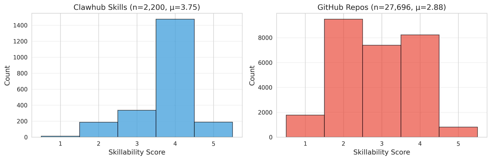
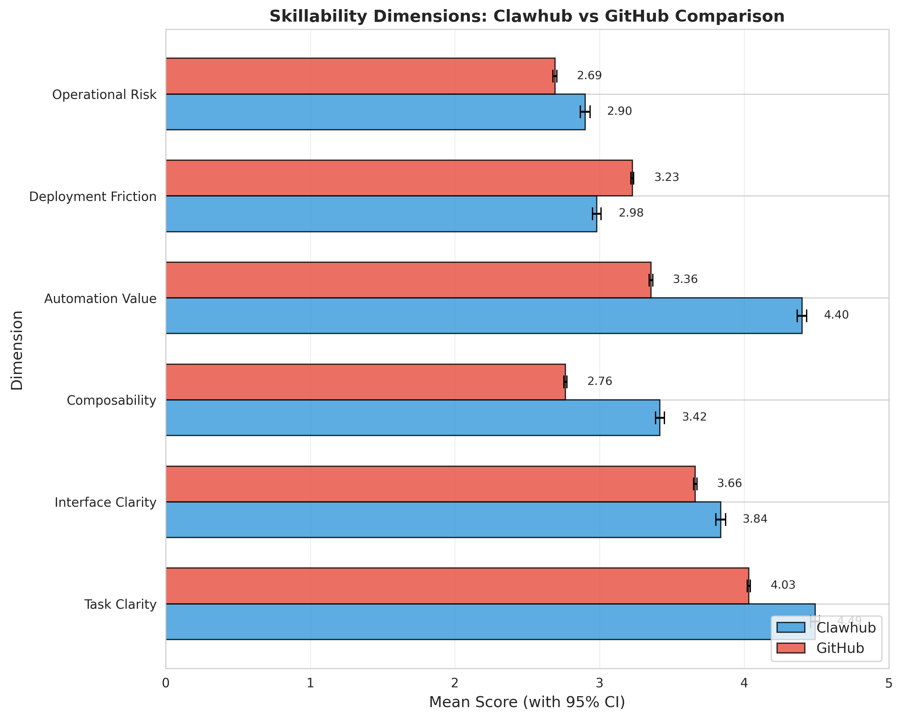
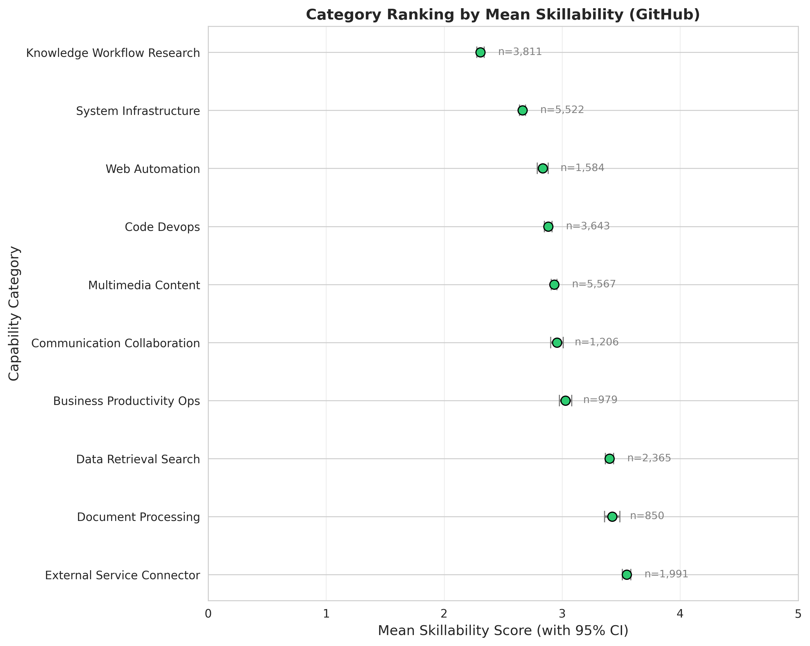
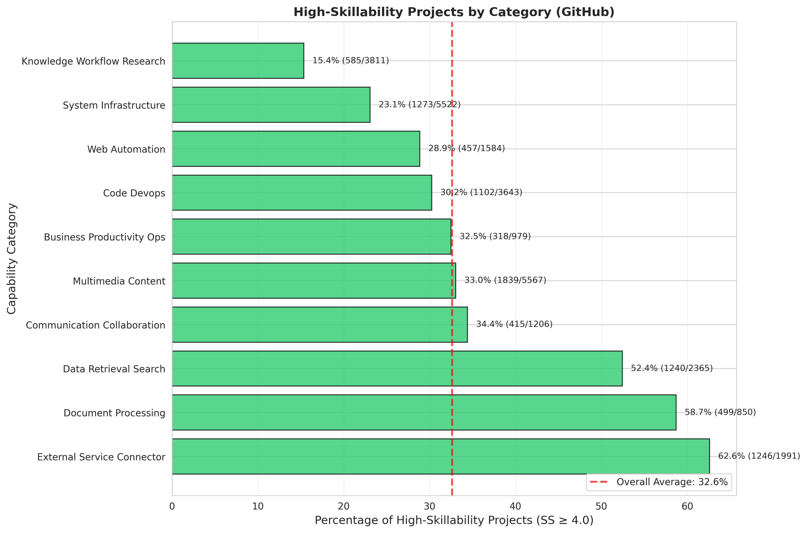
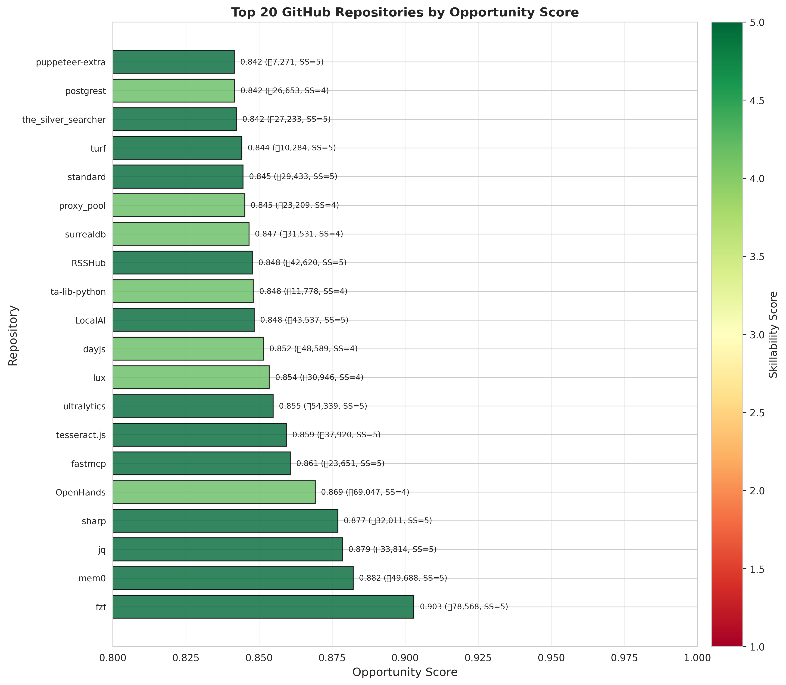
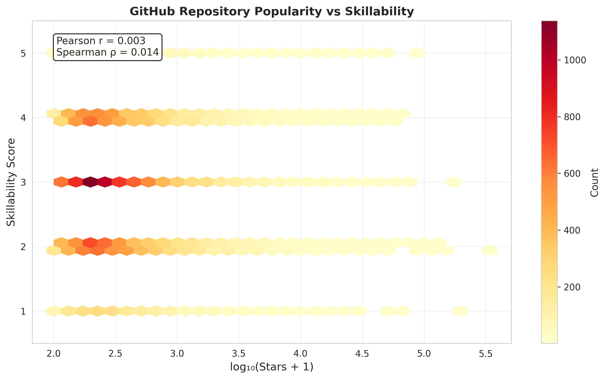

Key Findings
What is Skillability?
Skillability measures how suitable an open-source project is for transformation into an AI agent skill, across six dimensions:
Task Clarity (TC)
How focused and well-bounded the software's purpose appears
Interface Clarity (IC)
How explicit and understandable the invocation interface is
Composability (C)
How naturally the artifact fits into larger workflows
Automation Value (AV)
How much useful manual effort the artifact removes
Deployment Friction (DF)
How difficult to deploy and maintain (reverse-coded)
Operational Risk (OR)
How risky fully automated execution is (reverse-coded)
Data Visualizations
Skillability Score Distribution

Clawhub skills concentrate in upper range, GitHub repositories span more broadly
This histogram compares 2,200 Clawhub skills (mean SS = 3.75, SD = 0.82) against 27,696 GitHub repositories (mean SS = 2.88, SD = 1.21). The 0.87 point gap is statistically significant (Welch's t-test p < 0.001, Cohen's d = 0.74). Clawhub's distribution peaks around 3.5-4.5, with 75.7% scoring >= 4.0, while GitHub shows a broader spread with only 32.6% reaching high-skillability threshold. This reflects three confounds: marketplace artifacts have purpose-built descriptions for agents, undergo curation before publication, and are intentionally scoped as single skills rather than broad platforms.
Six-Dimension Comparison

Automation Value and Composability show largest gaps between marketplace and GitHub
This chart displays mean scores with 95% confidence intervals for each dimension. Automation Value shows the largest marketplace advantage (+1.04 points, Cohen's d = 0.95): Clawhub skills average 4.40 vs GitHub's 3.36, indicating marketplace artifacts target high-value repetitive tasks. Composability follows (+0.66, d = 0.70), reflecting intentional wrapping for workflow integration—marketplace skills average 3.42 vs 2.76 for repositories. Task Clarity is high across both groups (4.49 vs 4.03), suggesting many repositories communicate focused purpose even when not ideal skill candidates. Interface Clarity, Deployment Friction, and Operational Risk show smaller gaps, with the latter two reverse-coded (lower raw scores are better).
Capability Category Ranking

Data Retrieval, Multimedia Content, and System Infrastructure score highest
Categories ranked by mean skillability in the GitHub sample (n=27,696). Data Retrieval & Search leads at 3.42 (SD=1.08, 48.3% high-skillability), followed by Multimedia Content at 3.38 (SD=1.12, 46.1%) and System Infrastructure at 3.31 (SD=1.15, 44.2%). These domains share common traits: focused transformations, explicit interfaces, and obvious automation value. At the bottom, External Service Connectors average 2.71 (28.9% high-skillability), facing complexity from authentication, rate limiting, and external dependency coupling. The structured distribution means batch skillification efforts can target high-yield categories first rather than sampling uniformly across the ecosystem.
High-Skillability Distribution by Category

Significant variation in high-skillability rates across categories
This bar chart shows the percentage of repositories scoring SS >= 4.0 within each category. Data Retrieval leads at 48.3% (1,141 of 2,365 projects), nearly double the rate of External Service Connectors at 28.9% (576 of 1,991). The 19.4 percentage point spread demonstrates that high-potential repositories concentrate rather than distribute uniformly. For practical conversion pipelines, this means starting with Data Retrieval, Multimedia (46.1%), and System Infrastructure (44.2%) yields roughly one viable candidate per two repositories screened, versus one per three or four in lower-ranking categories. The pattern validates targeting domain-specific batches rather than random sampling.
Top Candidate Repositories

Highest-ranked GitHub repositories by opportunity score
OpportunityScore = 0.6 × normalize(SS) + 0.4 × RepoQuality, where RepoQuality combines log-scaled stars, recency, README length, and license presence. This heuristic balances skillability with practical repository signals to avoid ranking abandoned or poorly documented projects at the top. Examples: fzf (78,568 stars, SS=5.0, score=0.903) exemplifies the ideal—focused CLI tool with clear stdin/stdout model and deterministic local execution. jq (33,814 stars, SS=5.0, score=0.879) offers declarative JSON transformation with strong composability and minimal side effects. sharp (32,011 stars, SS=5.0, score=0.877) provides a clear image processing API with predictable outputs. These aren't just popular—they score maximum skillability through bounded scope, explicit interfaces, and high automation value.
Skillability vs Repository Stars

Skillability is effectively independent of popularity (rs = 0.003)
This scatter plot (log-scale x-axis) reveals near-zero Spearman correlation (r_s = 0.003, p = 0.62) between skillability and GitHub stars across 27,696 repositories. High-skillability projects (SS >= 4.0, shown in darker points) appear across the full popularity spectrum—from sub-100 stars to 50,000+. This independence is strategically crucial: star-based curation would systematically miss thousands of viable candidates. Popular repositories often include broad frameworks, end-user applications, and infrastructure platforms whose value doesn't translate to single-skill packaging. Conversely, small focused tools may be highly promising. The finding validates the need for a dedicated discovery layer rather than relying on conventional popularity signals.
Key Insights
🎯 Scale Opportunity
Over one-third of open-source projects show high skillability potential, making batch conversion feasible
📊 Structured Distribution
High-potential projects concentrate in Data Retrieval, Multimedia, and System Infrastructure domains
⭐ Popularity Trap
Repository stars are uncorrelated with skillability—relying on popularity misses many viable candidates
🔧 Actionable Guidance
9,033 specific high-potential repositories identified as skill conversion starting points
High-Potential Repository Examples
Top 250 repositories ranked by opportunity score. Use pagination to browse all candidates.
| # | Category | Repository | Stars | SS | Language |
|---|